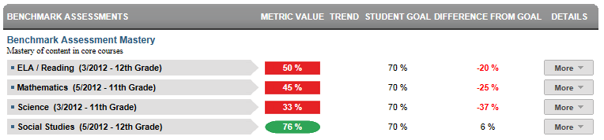
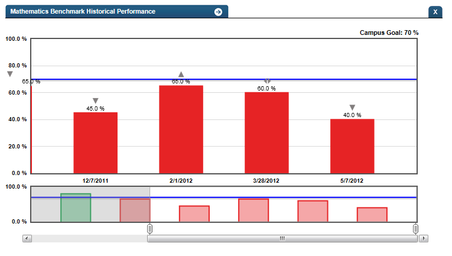

Dashboard Metrics


Benchmark Assessment Mastery
Background
Student Dashboard Metrics
Benchmark assessments (curriculum-referenced tests) are assessments administered periodically throughout the school year, at specified times during a curriculum sequence, to evaluate students’ knowledge and skills relative to an explicit set of longer-term learning goals. The design and choice of benchmark assessments is driven by the purpose, intended users and uses of the instruments. Benchmark assessment can inform policy, instructional planning and decision-making at the classroom, school and district levels.
Primary Metric
- Benchmark Mastery: a student's score on a benchmark test and whether or not it meets the campus goal.
Related Metrics
- Subject Area Grades: grades for each of the subject areas.
- Course Grades - Failing: the number of courses with failing grades out of total courses taken at the end of each grading period, with a trend comparison to the student’s course failures for the prior grading period.
- Course Grades - Falling: the number of courses out of the total taken for which the student’s most recent course grade is dropping 10% or more from the prior grading period, with a trend comparison to the student’s course declines as of the prior grading period.
- Course Grades - Grades Below C: the number of courses for which the student’s most recent course grade is below C(70%), with trend comparison to the student’s courses below C for the prior grading period.
User Interface
Dashboard Example
Figure 1 shows the Student Benchmark Assessment metric as seen on the student dashboard.

Figure 1 Ed-Fi Benchmark Assessment Mastery Metric
Visibility Rules
The metric is not visible if benchmark data is not loaded into the database.
Status Definition
The Status Indicator is determined by campus-specific thresholds (campus goals) which are set at the district level. The Ed-Fi dashboards default threshold for each core subject is 70%.
Metric Indicator | Trend Comparisons | |||
Metric Name | Sub-metric Name | Metric Status Indicator | Compares: | To: |
Benchmark Assessment Mastery | ELA/Reading | Red (Below) = if student assessment score percentage is less than campus goal Green (Above) = if student assessment score percentage is greater than or equal to campus goal | Current assessment score | Previous assessment score |
Writing | Red (Below) = if student assessment score percentage is less than campus goal Green (Above) = if student assessment score percentage is greater than or equal to campus goal | Current assessment score | Previous assessment score | |
Mathematics | Red (Below) = if student assessment score percentage is less than campus goal Green (Above) = if student assessment score percentage is greater than or equal to campus goal | Current assessment score | Previous assessment score | |
Science | Red (Below) = if student assessment score percentage is less than campus goal Green (Above) = if student assessment score percentage is greater than or equal to campus goal | Current assessment score | Previous assessment score | |
Social Studies | Red (Below) = if student assessment score percentage is less than campus goal Green (Above) = if student assessment score percentage is greater than or equal to campus goal | Current assessment score | Previous assessment score | |
(a) The Value column displays the percentage of learning standards the student mastered out of the total number tested.
(b) The trends do not display if prior-year benchmark assessment data does not exist.
Trend Definition
Table 3 lists the trend indicators for the Benchmark Assessment Mastery metric. For Phase 2, the trend indicators are gray; this table is for documentation purposes only.
The trend does not display if the student has not taken a previous benchmark assessment.
Trend Indicators: Objective is to indicate Benchmark Assessment Mastery | |||
| Up green | If the value for the current period is more than 5 percentage points higher than the prior period | |
| Unchanged | If the value for the current period is less than or equal to 5 percentage points higher or less than or equal to 5 percentage points lower | |
| Down red | If the value for the current period is more than 5 percentage points lower than the prior period | |
Periodicity
Recommended Load Characteristics | |
Calendar | Throughout the school year |
Frequency of data load | Beginning and end of year |
Latency | 4 weeks |
Interchange schema | Interchange-StudentAssessment.xsd |
Tooltip
The standard tooltips for the metric definition, column headers, and help functions display for this metric.
The following tooltips are specific to the Benchmark metric:
 is ‘No change from the prior period’
is ‘No change from the prior period’ is 'Getting worse from the prior period’
is 'Getting worse from the prior period’ is ‘Getting better from the prior period’
is ‘Getting better from the prior period’
Business Rules
All assessment data is displayed by the specific subject area:
- Elementary subjects: reading, writing, mathematics, science and social studies
- Middle school subjects: reading, writing, mathematics, science and social studies plus high school subjects that are tested at middle level (e.g., Algebra I, English I)
- High School subjects: Algebra I, Geometry
Data Source Requirements
- Benchmark assessments are made available to the districts periodically as they are administered throughout the year.
- Transfer students (late enrollment) who do not have complete transcripts should be indicated.
- State criteria differs by state and by year. Developers have the option to adjust the thresholds to fit specific organizational criteria.
Calculated Values
Table 5 defines how values for each subject are calculated. The result of the calculation displays in the Value column.
| Metric | Calculation |
Benchmark Assessment Mastery | Percentage = (Total number of learning standards mastered for the subject) / (Total number of all learning standards tested for the subject) * 100 |
Data Anomalies
Anomalies
- Metrics are sensitive to when and how often the data is loaded.
- Late enrollees are likely to be missing previous assessment data..
- Loading of data from multiple administration dates.
- The classroom view will display the most recent exam.
Best practice is to use footnotes to address these anomalies.
Footnotes
Footnotes are used to provide additional information concerning the metric. Footnotes are sequential for the entire page. Therefore, a metric's footnote may not begin with the number 1.
The following footnotes appear below the metric:
- Students who have retaken the benchmark
- Transfer students with an incomplete transcript
Date of Refresh
Best practice is for the date of last data refresh to appear next the metric in the following format:
- (2/2011 - 5th grade) - for each subject area
Implementation Considerations
Student Identity
Maintaining a correct and consistent student identity is at the center of any education data system. Most systems use some sort of unique identifier. However, sometimes this identifier is entered incorrectly or sometimes different systems use different identifiers.
The UDM XML supports the interchange of multiple types of identifiers. The StudentReference is a complex type within the UDM to maintain the referential integrity of the student (that is, ensuring that the data associated with each student is accurately associated with the right student). The complex type of the student reference assists with implementing the accurate matching algorithm to identify a student by utilizing any of the individual attributes (e.g., Student Unique State ID, Student ID, Campus Local ID (with Campus ID), Name and Birth Date). For example, if the Student Unique State ID is unknown, you can find the student’s identity by their Student ID, First Name, Last Name and Birth Date.
Non-Participation
Students who are scheduled to take an assessment, but are absent or exempt are reported in the assessment results files, along with the reason (e.g., absent, exempt for specific reason, etc.). Best practice is for developers to flag or footnote absent and exempt students in some manner.
Tying Test Results to Curriculum Standards
Interest has been expressed in having a next-level drill down from objectives to the student expectations level, which tie to the curriculum standards. This requires a separate file of data and mapping of assessment items to student expectation. This data is not available until after the last state assessment administration for the year and must be specially obtained from the test provider (Pearson).
Changes in State Assessments
If states that are undergoing changes in assessment standards and/or tests, it may impact the way that current and longitudinal data is presented.
- Limited historical comparisons: The comparison of prior year’s state assessment scale scores cannot currently be rigidly interpreted because the mapping of raw scores to scale scores is not uniform from year to year. As vertical scores are available, this comparison becomes possible and can be incorporated into the metric visualizations.
- Updating of graphs and thresholds: With the transition from a defined scale score to the vertical score, the year-to-year performance thresholds set by the state will vary by subject and will increase from grade to grade. Historical visualizations of this information will take this into account.
Benchmark Assessment Identification
When mapping to district data, the district needs to identify the following based components from the enumerated set of data: test type (benchmark, common formative assessment, quiz, pretest for state standardized test, six weeks test, etc.), grade level, subject, classroom/section, campus, date of administration.
Content Standard Items
Specific state content standard item is optional.
Visual Representations
Ed-Fi metrics refer to benchmarks, but developers can use the same framework for any type of interim assessments, such as quizzes, periodic exams, pre-tests for state exam, etc. The dashboard could have a checkbox that enables educators to check the type of test they want to see represented in the dashboard.
Drill Downs
Drill Down View
The dashboards include the option to drill down and see more detail that is associated with a metric. Table 6 lists the drill down views that are recommended for this metric.
| Historical | Graph of historical performance |
Description
The Benchmark Assessment detail drill down displays the benchmark examinations taken, associated comprehensive score and current year.
Data Mapping
The Benchmark Assessment historical drill down does not require additional data mapping.
User Interface Notes
Dashboard Example
Figure 2 shows the historical view of Benchmark Assessment Mastery.

Figure 2 Ed-Fi Benchmark Historical
Drill Down Footnotes
A footnote for this metric detail should state that the benchmark scores may not be applied in the same manner across the district. These scores relate to the examinations administered at this campus.
Business Rules
The benchmark assessment score detail displays the most recent score by administration date (within the current school year) grouped by subject area.
The Historical Graph allows the user to see historical data across multiple timeframes. As time passes, there are many bars to be displayed; therefore, the slider on the bottom allows the user to adjust the number of bars displayed as well as the time period shown. The timeframes for this metric were chosen based on educator feedback.